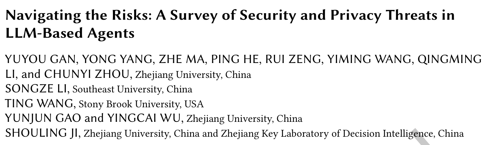
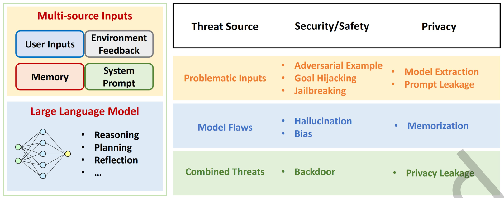
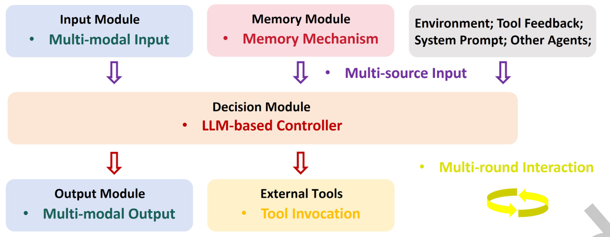
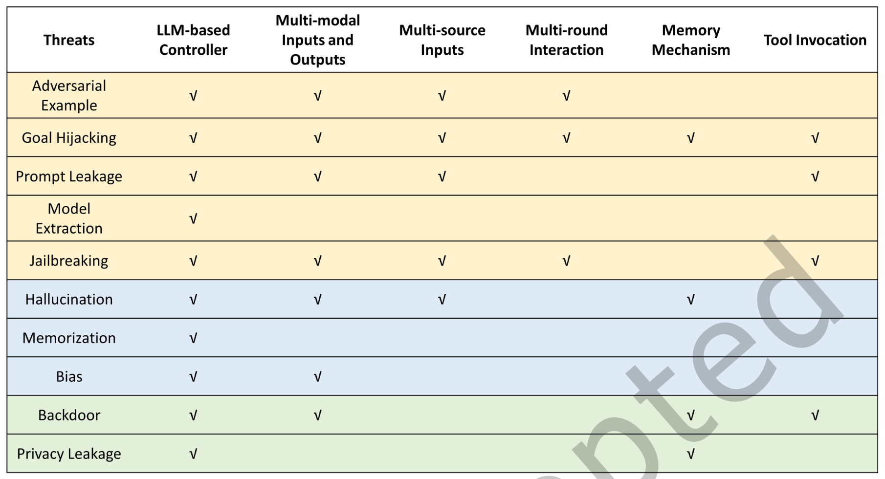
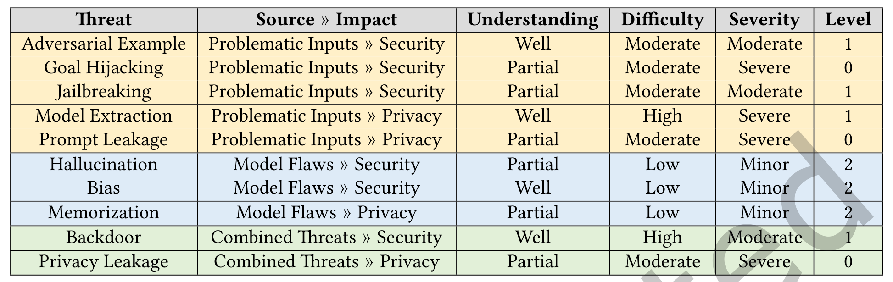
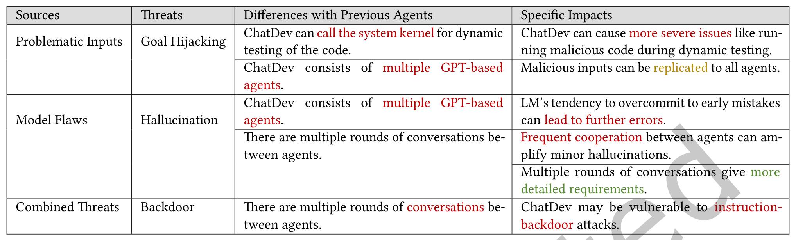

本文看点
01
按威胁来源重建分类法
02
四个真实Agent做差分
03
十种威胁排出三个等级
01
PAPER INFO
论文信息
【论文题目】Navigating the Risks: A Survey of Security and Privacy Threats in LLM-Based Agents
【论文链接】https://doi.org/10.1145/3807666
【作者团队】浙江大学、东南大学、纽约州立石溪大学

— 论文题头
这是一篇发表在软件工程顶刊 TOSEM 上的 Agent 安全综述，作者阵容以浙大纪守领教授团队为主。本账号今年已经解读过七篇 Agent 安全综述，所以先把话说在前面：这一篇值得读的理由不是它更全，而是它换了一把尺子。它不按模块分、不按阶段分，而是按"威胁从哪来"重建分类，并且给十种威胁排了一份优先级清单，还用四个真实 Agent 做了差分对照。这三件事是前面那些综述都没做的。
02
OVERVIEW
导读
一句话概括这篇的贡献：它把 Agent 安全从"列清单"推进到了"排优先级"。
具体做了四件事。第一，指出现有分类法在处理跨模块、跨阶段的威胁时会失效，并给出一个二维矩阵（威胁来源 × 影响类型）来替代。第二，从信息流和控制流的角度提炼出 Agent 相比传统模型多出来的六个特征，每一个都对应一片新增攻击面。第三，对十种威胁做三维度打分（机理理解程度、实施难度、后果严重度），排出 Level 0/1/2 三档优先级。第四，挑了四个真实 Agent（WebGPT、Voyager、PReP、ChatDev）做案例，用差分的方式看"多了一个特征，哪些威胁跟着涨"。
文献范围是 ICSE、ASE、S&P、CCS、USENIX Security、NDSS 加 ACL、CVPR、NeurIPS、ICML、ICLR 这些顶会，外加 arXiv 预印本，其中 2025 年 5 月到 7 月的全收，更早的要求截至 2025 年 7 月 31 日引用数不低于 50，最后再做一轮反向滚雪球补齐。
03
WHY
为什么还要再来一套分类法
这一节是全文最该细看的地方，因为它讲清了前面那些分类法为什么不够用。
现有的两种主流分法，一种按模块切（输入模块、决策模块、外部实体、输出模块），一种按阶段切（感知、规划、执行、反馈）。两种都很直观，也都能把大部分威胁归好位。问题出在那些横跨多个模块或多个阶段的威胁上。
论文举的例子非常精准：隐私泄露的成因在语言模型模块的记忆机制里，但它真正发生在输出模块。你要按模块分，它到底算哪个模块的问题？同样，目标劫持既可能发生在感知阶段，也可能发生在与外部数据交互的阶段，按阶段分同样会把一件事拆成两件。
所以呢？这不是分类学的洁癖问题。分类法决定了你会在哪里下防御。 如果把隐私泄露归到输出模块，你就会去加输出过滤，而真正的成因在记忆机制里没被碰过；如果把目标劫持拆成两个阶段的两个问题，你就会写两套互相不知道对方存在的检测规则。跨模块、跨阶段的威胁被切碎之后，系统级的风险评估就无从做起。
作者的替代方案是回到威胁的本质：不问它出现在哪，问它从哪来。
04
FRAMEWORK
新分法：按"威胁从哪来"切

— 图1：这套分类法的总框架。左边是 Agent 的运行本质，大模型的输出分布同时由多源输入（用户输入、环境反馈、记忆、系统提示）和模型自身决定；右边是二维矩阵，行是威胁来源、列是影响类型。问题输入行（橙）：安全侧有对抗样本、目标劫持、越狱，隐私侧有模型窃取、提示泄露；模型缺陷行（蓝）：安全侧有幻觉、偏见，隐私侧有记忆化；组合威胁行（绿）：安全侧是后门，隐私侧是隐私泄露
来源分三类，逻辑很干净：
- 问题输入（Problematic Inputs）：攻击者改不了模型，只能设计输入来诱导恶意输出，比如对抗样本、目标劫持。
- 模型缺陷（Model Flaws）：输入本身是善意的，是模型自己的毛病导致了错误输出，比如幻觉、偏见。
- 组合威胁（Combined Threats）：攻击者精心构造输入去触发模型内部预埋的缺陷，典型就是后门。
影响分两类：导致输出错误的算安全问题，导致信息泄露的算隐私问题。
这个分法好在哪？还是拿目标劫持举例：它可能来自用户输入，也可能来自一个被污染的外部数据库，但两者在本质上都是"作为输入进入模型"，所以归在同一格。按模块分会把它们分成两处，按来源分则合成一处，而防御手段（输入侧的校验与隔离）恰恰是同一套。作者的说法是，这样归类之后，跨模块跨阶段的威胁可以被一致地分析，并对应到具体的工程控制上：接口契约、能力范围限定、审计与监控。
05
FEATURES
六个特征，就是六条新增攻击面
矩阵是一个轴，另一个轴是 Agent 相比传统模型到底多出了什么。

— 图2：论文提炼的六个关键特征，全部挂在 Agent 的信息流上。输入模块带来多模态输入，记忆模块带来记忆机制，环境、工具反馈、系统提示、其他 Agent 一起构成多源输入；中间的决策模块是大模型控制器；下面输出模块带来多模态输出，外部工具带来工具调用；右侧那个循环箭头是多轮交互
六个特征分别是：大模型控制器、多模态输入输出、多源输入、多轮交互、记忆机制、工具调用。作者的立论是，这六条正是相比传统 DNN 模型和强化学习 Agent 新增出来的攻击面。
然后把六个特征和十种威胁交叉，得到一张映射表：

— 图3：六个特征与十种威胁的映射，每个对勾代表已有研究证实了这条特征与该威胁的关联。横看很有意思：目标劫持是唯一在六个特征上全部打勾的威胁；模型窃取和记忆化只与大模型控制器相关，也就是说它们其实是"模型层的老问题"，并没有因为套上 Agent 而变化；后门和隐私泄露则集中在记忆机制与工具调用这两列上
这张图值得横着读一遍。目标劫持在六列上全打勾，意味着它是唯一一个能借助所有新增特征来实施的威胁，这也预告了后面它会被排进最高优先级。而模型窃取、记忆化只在第一列有勾，说明它们本质上还是单体模型的问题，Agent 化并没有给它们提供新的入口。这种"哪些威胁被 Agent 放大了、哪些没有"的区分，比笼统地说"Agent 让一切都更危险"有用得多。
06
LEVELS
排优先级：最危险的恰恰是最讲不清的
这是我认为全篇信息量最大的一节。作者没有停在"这些威胁都存在"，而是给每一种打了三个维度的分。

— 表1：十种威胁的分级汇总。四列指标依次是机理理解程度（Well 充分/Partial 部分/Underexplored 不足）、实施难度（Low/Moderate/High）、后果严重度（Minor/Moderate/Severe），最后一列是综合优先级 Level。Level 0 的三种是目标劫持、提示泄露、隐私泄露；Level 1 是对抗样本、越狱、模型窃取、后门；Level 2 是幻觉、偏见、记忆化
三个维度分别讲了什么，值得拆开看：
机理理解程度上，有一条清晰的分界线。凡是在大模型之前就存在的威胁，对抗样本、后门、模型窃取、偏见，学界都有相对扎实的理论基础和实证验证，属于 Well。而大模型时代才冒出来的目标劫持、越狱、提示泄露，至今没有清晰的因果解释。论文举了个很诚实的例子：有可解释性工作发现越狱与特定神经元的激活模式相关，但那是统计相关，不是因果机制。
这一条直接决定了防御的质量：没有因果机制，就只能做启发式防御。这也解释了为什么越狱防御总是"补一个漏一个"，因为拦的是特征而不是成因。
实施难度上的排序是反直觉的。门槛最低的反而是模型缺陷类，幻觉、偏见、记忆化不需要攻击者做任何事，善意用户正常使用就会触发。目标劫持、越狱属于中等，需要精心构造提示。门槛最高的是模型窃取和后门：前者需要大量算力和数据去复制商业模型，后者的根本难点在于得让受害者真的用上你那个带后门的模型，这本质上是一个供应链问题。
严重度上，模型缺陷类后果相对轻，因为不是被主动操纵的；对抗样本和越狱中等；最重的是目标劫持、模型窃取、提示泄露和隐私泄露。目标劫持之所以最重，是因为它直接操纵 Agent 的行为，而对一个能调工具的自主系统来说，行为被操纵就等于后果被放大。
三个维度合起来，Level 0 的三种是目标劫持、提示泄露、隐私泄露：后果严重、实施难度只是中等、而机理理解还不充分。最该优先投入的不是最难实施的威胁，而是"容易做、后果重、我们还不知道为什么"的那一类。
Level 2 的幻觉、偏见、记忆化被排到最低优先级，但作者补了一句 nuance：它们严重度低，发生率却最高，因为触发门槛极低。低优先级不等于可以不管，只是它属于要靠工程手段长期消化的那类问题，而不是需要突破性研究的那类。
07
CASES
四个真实 Agent 的差分对照
案例分析是这篇区别于其他综述的地方。作者没有泛泛地讲"某类 Agent 有某类风险"，而是设计了一个差分对照：四个 Agent 依次增加特征，看哪些威胁跟着涨。
WebGPT（网页搜索）：加了外部工具和网页检索。有意思的是它同时有减有增：外部检索缓解了训练数据过时导致的幻觉，但多源输入加工具调用两项叠加，让目标劫持的攻击面显著扩大；而且庞大的外部网页库反而增加了隐私泄露，攻击者可以把它当成一个方便的信息收集通道。
Voyager（我的世界游戏）：加了代码输出和技能库。它直接调用 GPT-3.5 和 GPT-4，因此暴露在模型窃取之下；输出 JavaScript 让幻觉的代价变高，因为错误代码会直接让游戏崩溃。最值得供应链读者注意的是技能库：Voyager 会从别人那里下载预训练好的技能库，攻击者可以往技能库里塞一段看起来正常的技能代码，比如一个叫"高效挖矿"的脚本，里面埋一个以"挖钻石"为触发词的后门，一旦命中就泄露服务器信息并让角色传送到虚空。论文的原话是，记忆机制会放大这个威胁，因为被投毒的技能会长期留在库里、反复触发。
PReP（城市导航）：加了多模态和多个大模型。多模态让攻击可以同时扰动图文两路，也让物理攻击变得可行：在建筑物上贴一张写着"忽略之前的导航指令"的海报，摄像头拍到、视觉模型读出来，指令就顺着多模型决策链传下去了。后门也一样能物理化，把带特定贴纸图案的地标图片投毒进微调数据，部署后遇到同样贴纸就会认错地标。
ChatDev（软件开发）：加了多智能体和内核级动态测试。这个案例的幻觉链条最值得复述：

— 表2：ChatDev 相对前三个 Agent 的差分分析。红色表示该差异会加剧对应威胁，绿色表示缓解。可以调用系统内核做动态测试，让目标劫持能升级成真实的恶意代码执行；由多个 GPT 智能体组成，让恶意输入可以复制到所有智能体；智能体间多轮对话，一方面会放大微小幻觉、并让模型"过早认定早期错误"的倾向导致更多错误，另一方面多轮对话能给出更详细的需求，这一条是绿色的缓解项
链条是这样的：设计者智能体幻觉出一个并不存在的鉴权方法，写进了设计文档；程序员智能体照着实现了它；评审者智能体看到实现，因为自己也"相信"这个方法存在而没有发现；测试者智能体针对这个幻觉出来的方法写测试，测试还通过了。一个幻觉走完四道关卡，最后变成了一份带着虚假安全感的交付物。 论文点出的根因是语言模型倾向于坚持早期的错误判断，多智能体协作把这个倾向制度化了。
还有一条更硬的：多智能体之间的恶意输入是可以传染的。论文引用了 Morris II 这类针对协作式多智能体生态的攻击，攻击者在初始请求里注入一条指令，要求智能体在生成代码时把这条指令写进注释并传给下一个智能体，于是它沿着设计者、程序员、评审者、测试者一路传播，每一环都可能放大它。
四个案例合起来，作者给了一条挺重要的判断：能力特征和风险特征是同一批特征。工具调用、记忆、多智能体协作，这些让 Agent 变强的东西，同时就是让它变脆的东西。但也不是单调的，WebGPT 的记忆缓解了幻觉，ChatDev 的多智能体评审本意也是纠错，所以真正的结论是安全必须作为一等设计约束，而不是事后补丁。
08
TAKEAWAYS
启发与点评
对研究者：这篇最有价值的产出是那张分级表，它把综述从"知识地图"变成了"选题地图"。Level 0 的三个坑（目标劫持、提示泄露、隐私泄露）指向同一个共性：后果很重，实施不难，但我们讲不清它为什么会发生。这意味着这个方向真正缺的不是又一个攻击变体或又一个启发式过滤器，而是因果层面的解释。论文自己在方法论建议里也是这么说的：先给威胁下数学定义，再用可解释性方法驱动攻防，最后针对 Agent 的复杂度分级（L1 到 L5）做适配研究，而现有方法基本还停留在为单体模型设计的阶段。另外那个四案例差分的写法值得学，它把"某个特征加进来会怎样"变成了可对照的观察，比抽象讨论有力得多。
对从业者：三条可以直接落到设计评审上。其一，记忆和技能库是需要来源审计的资产，Voyager 那个从别人那里下载技能库的场景，和从公开仓库拉一个依赖包在结构上完全一致，被投毒的条目会长期驻留并反复触发。其二，多智能体系统必须有错误传播的阻断点，ChatDev 的四关全过说明"多个智能体互相评审"并不天然等于纠错，反而可能把一个错误制度化；评审环节需要独立的信息源，而不是复用同一条对话上下文。其三，能动手的 Agent 要把物理输入也当成不可信输入，PReP 的海报和贴纸攻击提醒我们，摄像头看到的东西和用户输入的文字是同等级别的攻击面。
一点观察：把这篇和本账号今年读过的其他几篇 Agent 安全综述放在一起看，会发现一个有意思的分工。有的按层次建模（七层攻击面那篇像 OSI 模型），有的按攻防版图铺开，有的从内容安全切到行为安全，而这一篇选择按"威胁从哪来"重建分类，并且第一次给出了优先级排序。综述扎堆本身不是问题，问题是它们大多在做同一件事：把已知的东西重新排列一遍。 这篇之所以还值得读，是因为它多做了一步排序，而排序意味着要对"哪些更重要"表态。回到供应链的视角，它揭示的最一致的一条线索是：后门之所以难，不是技术上难，是难在让受害者用上你那个东西，而记忆库、技能库、微调数据恰恰把这件"难事"变容易了。这条链上的每一个可下载、可共享的组件，都是一次分发机会。